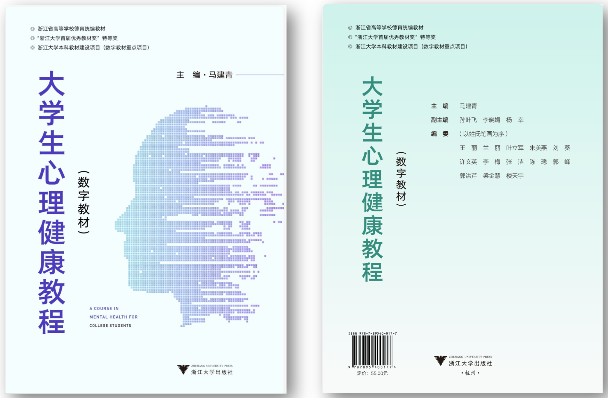
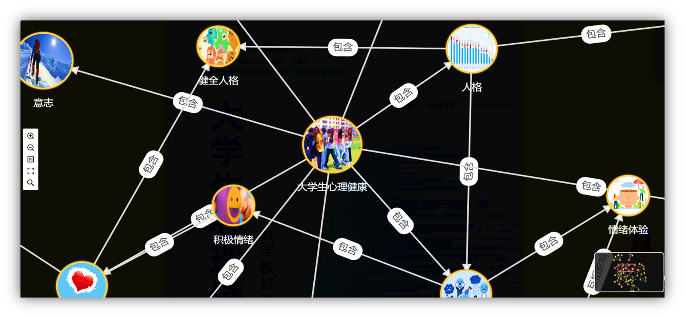
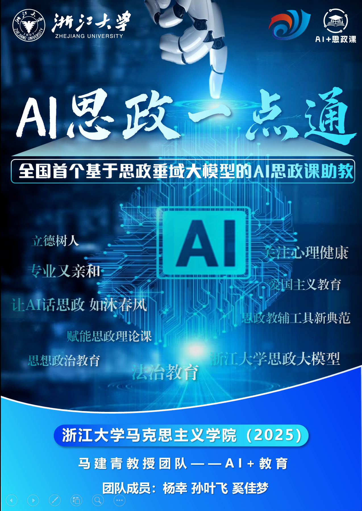
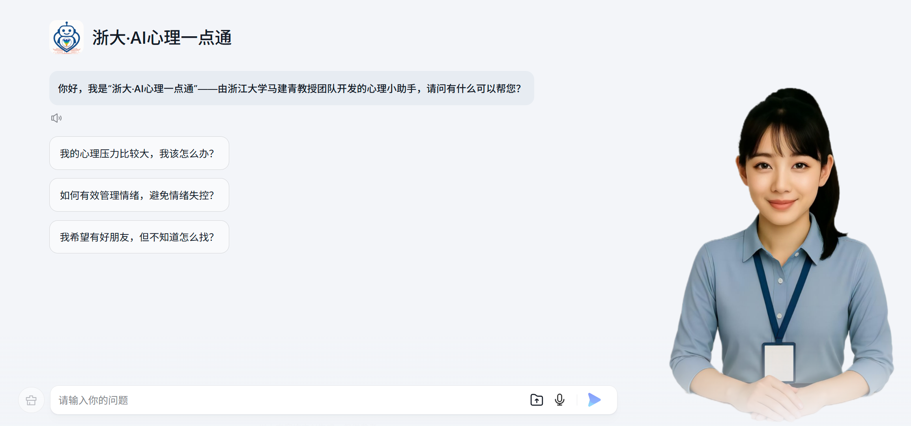
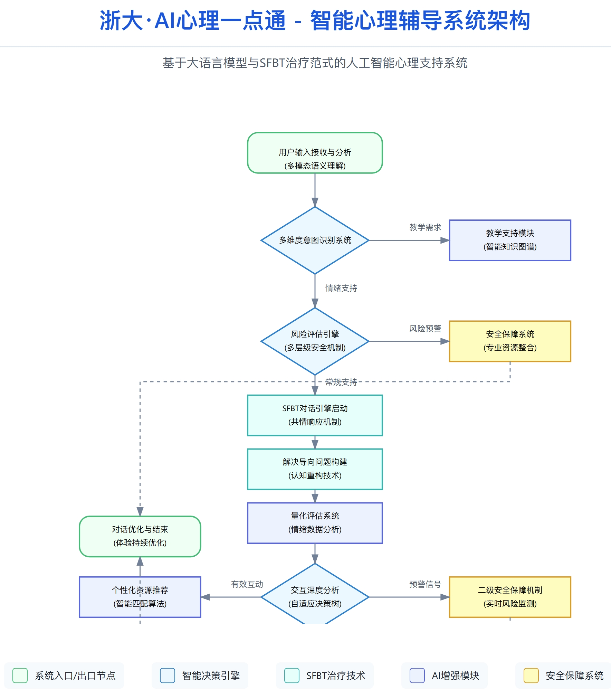
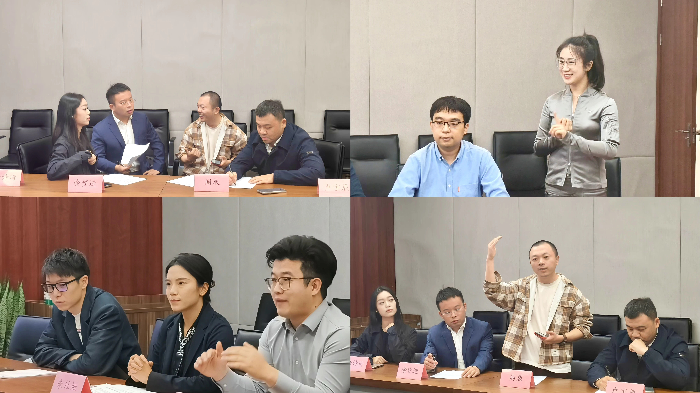

杨幸
浙江大学马克思主义学院 博士研究生
心理学本硕
思想政治教育专业博士在读
博导：马建青（二级教授/博导）
国家万人计划教学名师 国务院政府特殊津贴专家
国家万人计划教学名师 国务院政府特殊津贴专家

个人简介：
- 全国首部《大学生心理健康教育教程》数字教材副主编｜录取至浙大首届机器人班 朱世强导师组（2025年5月）
- "AI思政课一点通" "AI心理一点通" 项目 核心开发者
- 浙江科技大学、厦门医学院等单位邀约讲授者｜贵州都匀市政府招商引资政策实践意向合作｜"陈行甲AI心理医生" 智能向善志愿网络"齐家AI"开发成员
专注于生成式人工智能在思想政治教育、心理健康、家庭育儿与教育技术融合领域的交叉应用，具备从大模型微调、RAG架构设计、智能体开发到Prompt工程的完整技术体系，兼具教学产品设计与实景落地经验。特别擅长教育场景需求建模、知识图谱组织与对话风格调优，主担任项目"教育场景落地"与"可视化AI产品设计"开发者、负责人。
📘
重大成果与职责担当
全国首部《大学生心理健康教育教程》数字教材副主编，独立承担AI交互系统、心理测评数据结构、小游戏开发、数字人生成与AIGC视频正念引导等内容开发，是该教材智能化转型的关键实操者之一。该数字教材拟被列为全国高校教材数字化升级样板。
🔹 点击查看详情：
教材封面 +
AI助教🤖 +
知识图谱 +
AIGC正念引导视频片段 +
教材2分钟展示视频
教材封面
注：点击 查看教材介绍 网页版
AI助教功能
``
注：此视频为数字教材·AI助教功能·实际使用情况录屏
知识图谱
注：点击 查看教材介绍 网页版

教材2分钟展示视频
点击查看 2min介绍视频
🔧
主导项目实践与平台化应用
🔹
《浙大·AI思政课一点通》
全国首个基于思想政治教育领域大模型的智能体型产品，已在浙江大学等十余所高校落地，2024.09公开上线并免费使用，累计用户量4500+人，使用量超38,000次。覆盖助学、助教、助研、助心四大场景，功能包含：一键备课、政策解读、课堂互动、作业智能评分、学生心理辅助等，入选浙江大学"AI for Education"重点项目、典型案例。
🔹 点击查看详情：
开发时间轴图、
项目主海报、
双二维码页（产品入口码、功能说明码）
开发时间轴图

项目主海报
注：杨幸：担任马建青教授团队系列项目·技术骨干

🔹
《浙大·AI心理一点通》
面向心理健康领域构建的垂直大模型智能体，已在百度、浙大先生多平台部署，支持心理危机识别、共情对话风格调节、SFBT辅导流程模拟与咨询式AI交互，提供高可信度心理支持解决方案。具备完整知识库、记忆变量与对话多轮追踪能力。
🔹 点击查看详情：
产品使用二维码、
主界面截图、
心理危机调度流程图
产品使用二维码 (AI心理一点通)
主界面截图
注：该图为AI心理一点通的网页版主界面截图（还有小程序版）。
心理危机调度流程图
注：AI心理一点通技术路线图（心理机器人·后台调度·流程逻辑）
📊
发展历程与平台认可
2023年2月--2024年4月
完成全国首套AI+心理健康数字教材研发，发布全国首个LLM+RAG心理咨询问答机器人（助教）
2023年12月--2024年3月
主导"AI思政课一点通"入选浙江大学首批"AI for Education"教育改革重点项目（170+申请/16立项，其中重点8项）
2024年9月
完成2.0版系统部署，试用落地浙江大学、浙江万里学院、浙江科技大学、厦门医学院等多所大学
2025年2月
完成3.0版品牌升级，上线浙大先生平台，免费对全国827所院校开放，浙大马院将其带往新疆多所大学等
2025 年 4 月
升级至 4.0 版本：三大模块（知识问答 / 心理支持 / 价值观对话）高度独立协同；用户意图识别更精准，交互更具亲和力与引导性；支持 SFBT 多轮心理对话；实现模块自动调用、用户画像记忆等突破，成为国内首个具“人格感 + 模块调用智能性”的思政 AI 智能体。
📎
相关证明材料一览
AI项目时间轴图

AI思政课一点通发展历程

AI思政课功能说明二维码

陈行甲AI心理医生·技术攻坚闭门会合影

讲座及项目媒体报道封面集
查看相关报道

进入强鹰2025机器人班

浙大AI思政课一点通公益推广（面向贵州都匀市政府）
面向政府、高校等机构开展AI专题讲座与培训
| 模块 | 名称 | 相关链接 |
|---|---|---|
| 教材展示 | 大学生心理健康教育教程（数字教材） | 查看教材相关报道 | 访问教材介绍网页 |
| AI Agent产品 | AI思政课一点通 | 体验AI思政课一点通 |
| AI Agent产品 | AI心理一点通 | 体验AI心理一点通 |
| 项目报道 | AI思政课功能展示 | 查看详细功能介绍 |
| 团队项目 | 强鹰2025机器人班 | 了解项目详情 |
| 项目报道与培训讲座 | 学术会议相关成果评优 | 查看详情 |
| 浙大AI垂域模型建设与应用分享会 | 查看详情 | |
| 街道AI创新应用实践与新质生产力宣讲 | 查看详情 | |
| 蒋村街道讲座及宣讲节选 | 查看详情 | |
| 走进中小学创新培训课程及宣讲节选 | 查看详情 | |
| 普华创投项目介绍（招商引资） | 查看详情 |